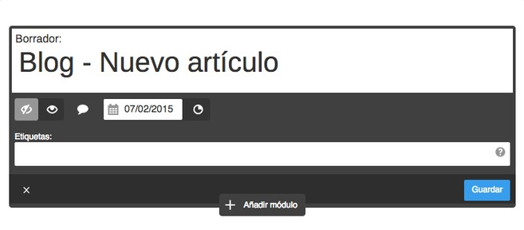
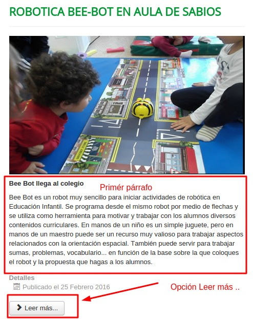

LOS ARTÍCULOS Categorías, tags, cuerpo y Leer más...

Categorías
Todo blog tiene sus categorías, y todo artículo tiene que clasificarse en alguna categoría. Estructura bien tu blog, elige bien las categorías.
- Si es una materia, blog del profesor dirigido a los alumnos: Categorías por los temas de la materia en cuestión Ejemplo.
- Si son diferentes materias, y quieres que el que lo lea los encuentre fácilmente: Por contenidos Ejemplo.
- Los alumnos participan junto con el blog de tus contenidos: Ponles categoría a ellos Ejemplo.
- Si no encaja categorías por contenidos, va a ser algo muy dinámico, con contenido muy variado, o es evidente, noticias: No es muy típico, pero se puede utiliza categorías cronológicas Ejemplo.
Tags
Son las palabras clave, las que facilitan al lector encontrar artículos con esas palabras. Utiliza siempre las mismas, no hagas dos tags diferentes para el mismo concepto noticia, noticias.
Una nube de tags facilita encontrar los artículos más interesantes.
No te pierdas este ejemplo JR 2.0 en blogger.
Cuerpo del artículo
Aquí escribiremos el artículo en sí, pero unos consejos:
- Escribir un artículo en un blog es muy distinto a un artículo en papel. Leer en la pantalla es tedioso, luego: Contenidos breves y de calidad:
- ¿Que buscas conseguir?, ¿Para qué va a servir?, objetivos.
- Estructura bien el contenido para no perderte por las ramas: Inicio, contenido y desenlace de lo que buscas conseguir.
- Lo accesorio, para ampliar... UTILIZA HIPERVÍNCULOS a las páginas Web, no rellenes tu artículo con algo que ya está en otro sitio.
- Por supuesto: Una imagen, un vídeo,... algo visual!!
- Leer más... Cuando escribas en un artículo, existe este botón que permite al lector NO VER EL ARTÍCULO ENTERO (ver imagen de abajo) y si le interesa, pincha en esa opción y lo ve todo, esto es importante para que tu Blog no sea extenso y breve, luego:
- Pon el primer cuerpo (Inicio) junto con la imagen lo que va a ver el usuario. Tiene que describir perfectamente qué tiene el artículo.
- Pon en el segundo cuerpo (Leer Más) el resto de contenido y el final
- Un buen título:
- Título abierto: ¿Qué piensas de..? La gran mentira... ¿Te lo crees..?
- Título Lista: 10 trucos para mejorar.. Las 5 mejores leyes de....
- Título negativo/positivo: Los 5 peores errores... Nunca hagas...Cómo puedes conseguir....
- Interacción:
- Atrae a los alumnos en temáticas motivadoras.
- Si no interactúan ¿para qué sirve? Busca la interacción, no hagan una lectura pasiva: Que respondan, que contesten, que realicen una encuesta, que investiguen, que enriquezcan..
Ejemplo de Leer más ...


Aprendizaje Colaborativo con Blogs por Javier Quintana Peiró bajo licencia Creative Commons Reconocimiento-NoComercial-CompartirIgual 4.0 Internacional License.